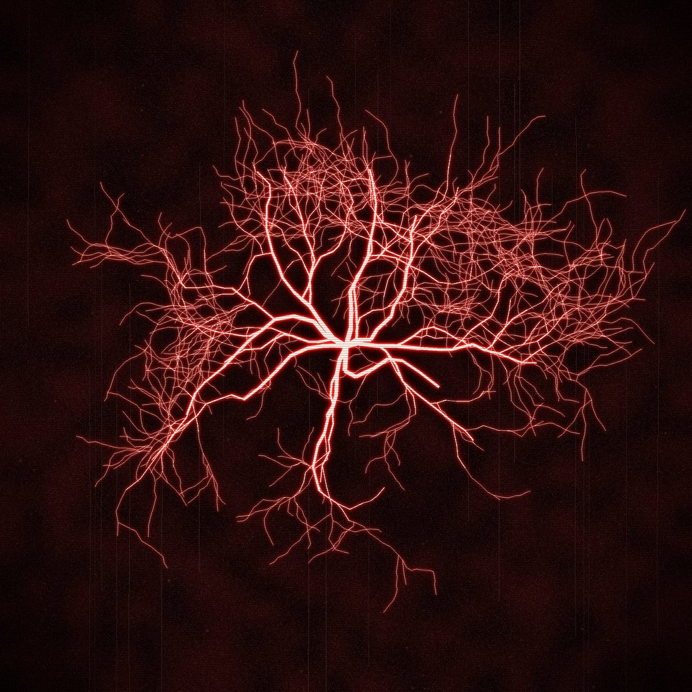

KRIECHSTROM
Ток утечки: то, что ползёт по изоляции, пока она стареет.
Прошивка для M-VAVE FM-1. Четыре дорожки холодных машин, расстроенных пианино, стен шума и драмов, которые бьют.
Поставить на FM-1 Читать мануал Шпаргалка Скачать kriechstrom-0.1.fwsc


Что внутри
- GLCH, главный движок: 48 звуков из клипа, фолдера, кричащего фильтра, кранча и микрозаикания, у большинства уже включён фузз или компрессор-давилка (движок из Glitchbox).
- 171 звуков в 13 движках, готовых к игре: перегруженные басы, холодные лиды, расстроенные клавиши, пэды, шумы и текстуры, плюс 13 драм-китов. Список фильтруется по категориям, так что бас в двух поворотах ручки.
- DICE: держи SEQ, жми F5, и у дорожки новая партия в одном из восьми настроений, от MACHINE до HUSH.
- HAPPY ACCIDENT: держи EDIT, жми G5, и звук слегка ломается. Удержание SAVE вернёт как было.
- Секвенсор на 64 шага на каждой дорожке: локи, условия, рэтчеты, автоматизация, песни.
- Драмы: 13 китов, включая DESTROY, восемь линий, сетка на клавишах.
- Живые эффекты на клавишах: повторы, остановка ленты, фриз, свипы, ROLL, GATE, броски в ревер и дилей.
- MIDI вход по USB и TRS, MIDI learn, USB-аудио. На компьютере видна как KRIECHSTROM.
- Чёрное с красным, крупные читаемые цифры, подсказки на экране.

Kriechstrom по-немецки ток утечки: он ползёт по старой изоляции и выжигает на ней вот такое дерево, ветка за веткой, пока что-нибудь не сдаст. Так эта машина и должна звучать.
Зачем
Glitchbox классный, но он сделан на Felucca 1.5.1 под старый чип памяти FM-1 и на новых экземплярах не запускается. Поэтому KRIECHSTROM собран на свежей Felucca, которая поддерживает оба чипа: из Glitchbox взято лучшее, а дальше всё темнее, тяжелее и сломаннее.
На чём сделано
KRIECHSTROM сделан на основе Felucca 1.8.2 (Leo Kuroshita, Hügelton Instruments), с частями Glitchbox (erikdevos) и идеями из DIRGE (sinscum). Спасибо всем троим за вдохновение. Свободная программа под GNU GPL 3.0: исходники этой сборки (6.9 MB).